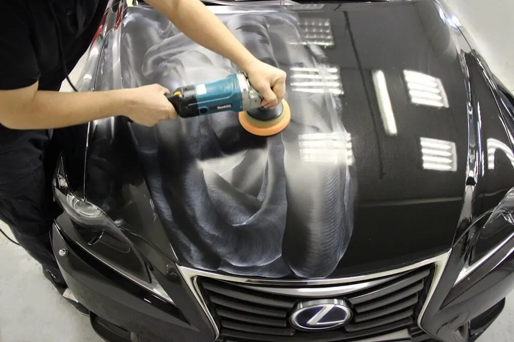
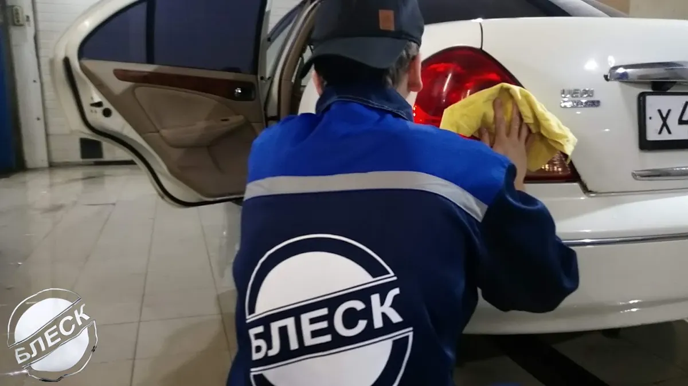
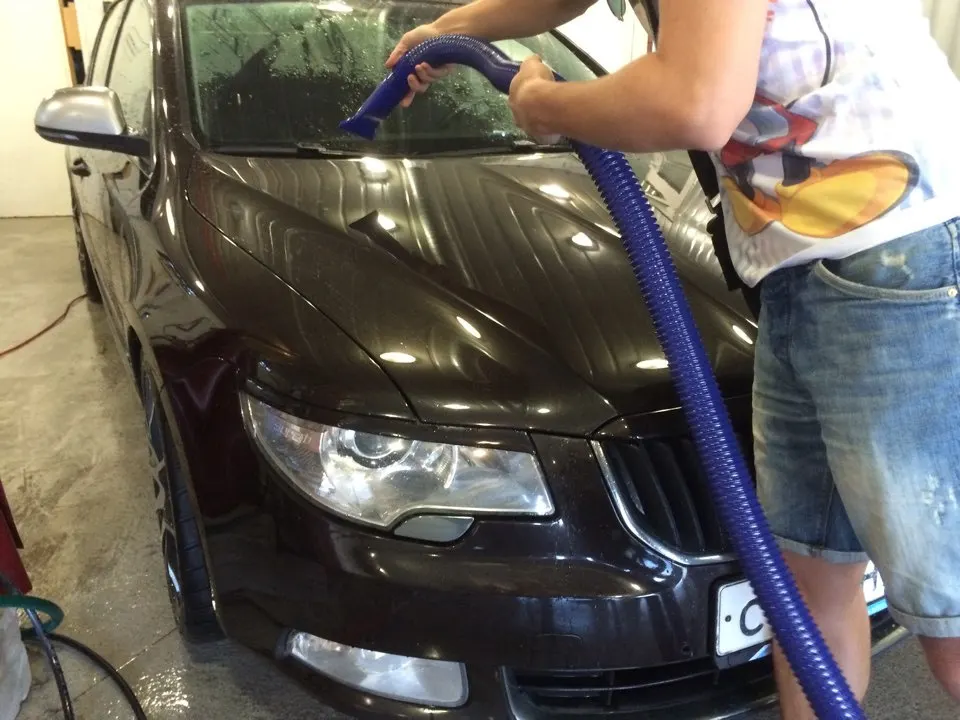
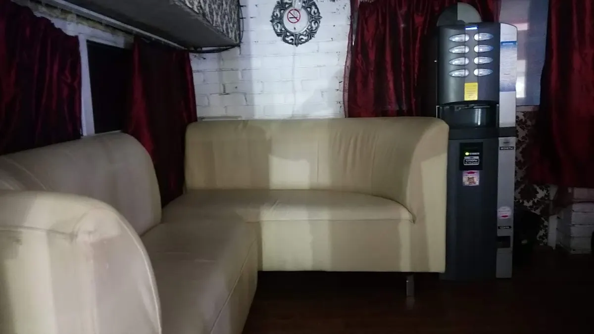

Детейлинг-студия · Омск
Мойка и детейлинг в Омске – вашу машину видно на экране
Ждёте в баре с кофе и смотрите, как моют. Запись онлайн, цена по классу машины – до приезда.
- Мойка в две или три фазы на химии Grass и Detail
- В прайсе расписано, что входит в каждую мойку
- Открыто каждый день с 9:00 до 23:00

Что входит в мойку
Входит
- Предварительная мойка активной пеной Active Foam Maxima
- Основная мойка шампунем Detail SP – в двух- и трёхфазной
- Гидрофобное покрытие кузова – в трёхфазной
- Протирка кузова и проёмов – начиная со «Стандарта»
Отдельно, если нужно
- Мойка ковров – в «Экспресс» и «Стандарт» не входит
- Турбосушка кузова
- Мойка двигателя, химчистка салона, полировка
Цены по классу машины
Первая цена – для седана и хэтчбека. Кроссовер и внедорожник – в строке под названием. Прайс с карточки на Яндекс.Картах, обновлён 27 сентября.
Мойка кузова
- Экспрессбесконтактная, без протирки, арок, порогов и ковров · кроссовер 1 000 ₽ · внедорожник 1 500 ₽от 800 ₽
- Стандартбесконтактная с активной пеной, протирка кузова и проёмов · кроссовер 1 500 ₽ · внедорожник 2 000 ₽от 1 000 ₽
- Двухфазная контактнаяпена Active Foam Maxima + шампунь Detail SP · кроссовер 2 000 ₽ · внедорожник 2 500 ₽от 1 500 ₽
- Трёхфазная контактнаядве фазы + гидрофобное покрытие Detail · кроссовер 2 500 ₽ · внедорожник 3 000 ₽от 2 000 ₽
- Техобливтехническая мойка без пены и протирки · кроссовер 800 ₽ · внедорожник 1 000 ₽уточнить
Кузов и салон
- ЕвроКомплексдвухфазная мойка кузова и уборка салона · внедорожник и минивэн 7 000 ₽уточнить
- Премиум КомплексЕвроКомплекс + покрытие кузова твёрдым воском Hard Wax · внедорожник и минивэн 8 000 ₽уточнить
- Комплекс «Кузов. Салон.»поддерживающий, не позже двух недель после Евро- или Премиум Комплекса · кроссовер 5 000 ₽ · внедорожник 6 000 ₽от 4 000 ₽
Дополнительно
- Турбосушка кузоватёплым воздухом, без касания · кроссовер 2 000 ₽ · внедорожник 3 000 ₽от 1 000 ₽
- Мойка и сушка двигателяGrass Motor Cleaner, после мойки продувка воздухом · кроссовер 5 000 ₽ · внедорожник 6 000 ₽от 4 000 ₽
- Химчистка салонауточнить
- Полировка кузовауточнить
Цены, которых нет в прайсе, назовём при записи.
Как проходит
- 01
Записываетесь в приложении
В «Блеск Detailing» видно свободное время – выбираете услугу и удобное окно.
- 02
Приезжаете к своему времени
Машина заезжает в бокс, а вы идёте в зону ожидания.
- 03
Смотрите мойку на экране
Камеры показывают боксы, рядом кофе, чай и Wi-Fi.
- 04
Забираете чистую машину
Оплата картой, по QR-коду, через СБП или наличными – как вам удобно.



Почему к нам возвращаются
Состав каждой мойки – в прайсе
Видно, чем мойка за 800 ₽ отличается от мойки за 2 000 ₽, ещё до записи.
Химия названа по маркам
Активная пена Grass, шампунь и воск Detail – в названии каждой услуги.
Видно, как моют вашу машину
На экране в зоне ожидания – трансляция из боксов.
Скидка постоянным клиентам
Для постоянных клиентов есть дисконтная система.
Отзывы с Яндекс.Карт
«Очень удобный и современный сервис в центре нашего города. Запись онлайн позволяет экономить много своего времени. Не первый раз сюда обращаемся, ребята не когда не подводили, после посещения и кузов чистый и салон убран. Рекомендую 👍»
Юлия Викторовна · 7 июля 2025
«Удобная запись с описанием услуг и ценой через приложение, Яндекс GO либо 2ГИС, заказывал комплекс услуг и мойку двигателя, результат вполне впечатлил, всё сделали на профессиональном уровне. Рекомендую!»
Павел Долгих · 10 июля 2025
«Отличная мойка! Моют лучше всех, и цена нормальная. Удобный бар где можно ожидать, зимой не замерзнешь, летом не вспотеешь, и даже видно по камерам процесс мойки, кому это важно. Рекомендую!»
Вован Шиманский · 12 февраля 2024
Отзывы с карточки на Яндекс.Картах, без правок.
Частые вопросы
Как записаться?
В приложении «Блеск Detailing» – кнопка «Записаться в приложении» вверху страницы. Ещё можно записаться в Яндекс Картах, Навигаторе, Яндекс GO, Заправках и 2ГИС. Подобрать мойку поможет менеджер по телефону.
Чем двухфазная мойка отличается от трёхфазной?
В трёхфазной после двух этапов мойки кузов покрывают гидрофобным составом Detail – вода с него скатывается.
Где подождать, пока моют машину?
В зоне ожидания: кофе, чай, Wi-Fi и экран с видео из боксов.
Можно приехать с собакой или кошкой?
Да, с питомцами можно.
Есть подарочный сертификат?
Да. Сумму и оформление подскажет менеджер по телефону.
Запишитесь на мойку на удобное время
- Адрес
- 5-я Северная улица, 106, Омск
- Часы
- Каждый день 09:00–23:00